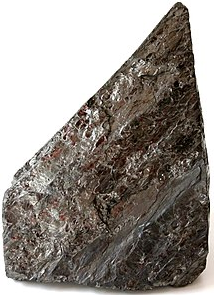

Coal
Coal can be defined as a sedimentary rock that burns. It was formed by thedecomposition of plant matter, and it is a complex substance that can be found in many forms.
Coal was formed from the remains of plants that were buried and subjected to high pressure and heat over long periods of time. Plant materials have a high content of cellulose, a complex molecule whose molar mass is around 500,000 g/mol. After the plants and trees that flourished on the earth at various times and places died and were buried, chemical changes gradually lowered the oxygen and hydrogen content of the cellulose molecules. Coal “matures” through four stages: lignite, subbituminous, bituminous, and anthracite. Each stage has a higher carbon-to-oxygen and carbon-to-hydrogen ratio; that is, the relative carbon content gradually increases. Typical elemental compositions of the various coals are given in Table 1. The energy available from the combustion of a given mass of coal increases as the carbon content increases. Therefore, anthracite is the most valuable coal, and lignite the least valuable.
Coal is an important and plentiful fuel in the United States, currently furnishing approximately 23% of our energy. However, coal is expensive and dangerous to mine underground, and the strip mining of fertile farmland in the Midwest or of scenic land in the West causes obvious problems. In addition, the burning of coal, especially high-sulfur coal, yields air pollutants such as sulfur dioxide, which, in turn, can lead to acid rain.
| Mass Percent of Each Element | |||||
|---|---|---|---|---|---|
| Type of Coal | C | H | O | N | S |
| Lignite | 71 | 4 | 23 | 1 | 1 |
| Subbituminouse | 77 | 5 | 16 | 1 | 1 |
| Bituminouse | 80 | 6 | 8 | 1 | 1 |
| Anthracitee | 92 | 3 | 3 | 1 | 1 |
Elemental analysis gives empirical formulas such as C137H97O9NS for bituminous coal and C240H90O4NS for high-grade anthracite. Atypical structure for coal is shown in Figure 1.
The structure and energy content of coal varies according to its type. As you've seen, lignite and sub-lignite coal are derived from peat and are quite similar in structure to lignin. These are soft and crumbly. As more alcohol groups are eliminated and more crosslinks are formed, the coal becomes harder and goes progressively to bituminous, then anthracite, and finally graphite.
 | 100% carbon, layered structure. Highest grade of coal but hard to ignite |
|  | 92-98% carbon, low impurities, blue flame Greatest harness |
| Bituminous | 60-80% carbon, contains tarry bitumen. Brown/black color, dull with mineral bands |
| Lignite | High moisture content. Lowest fuel value |
Coal Gasification
To understand how coal can be used as a raw material for the production of organic compounds, it is necessary to discuss synthesis gas. Synthesis gas (also known as syngas) is a mixture of carbon monoxide and hydrogen in varying proportions, depending on the means by which it is manufactured. Synthesis gas is prepared by passing steam over hot coal; it is also prepared by partial oxidation of methane with oxygen.
| C Coal | + H2O | heat ⟶ | CO | + H2 |
| CH4 Methane | + 1/2 O2 | Catalyst ⟶ | CO | + 2H2 |
Two important organic compounds produced today almost exclusively from carbon monoxide and hydrogen are methanol and acetic acid. In the production of methanol, the ratio of carbon monoxide to hydrogen is adjusted to 1:2 and the mixture is passed over a catalyst at elevated temperature and pressure.
| CO | + 2H2 | Catalyst ⟶ | CH3OH Methanol |
Treatment of methanol, in turn, with carbon monoxide over a different catalyst gives acetic acid.
| CH3OH Methanol | + CO | Catalyst ⟶ | CH3COOH Acetic acid |
Because the processes for making methanol and acetic acid directly from carbon monoxide are commercially proven, it is likely that the decades ahead will see the development of routes to other organic chemicals from coal via methanol.